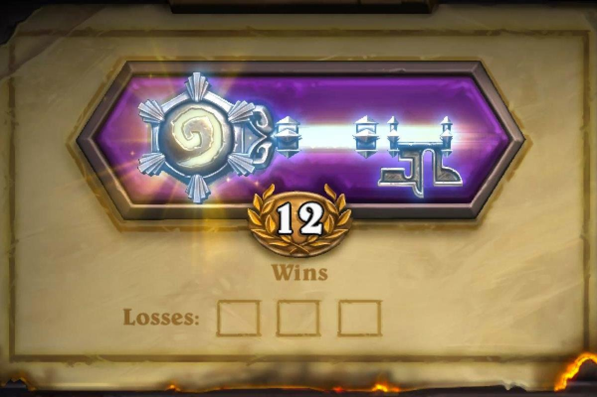
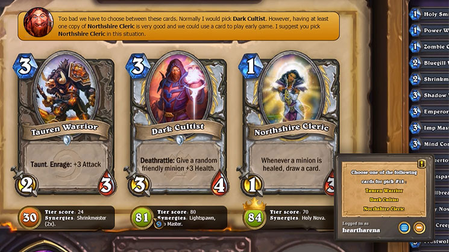

Dentro de Hearthstone, el modo Arena es sin duda uno de los más rentables siempre que se sepa hacer una buena selección de cartas. Debido a que cada pocos meses se anuncia una nueva expansión, es complicado estar al día de las mejores cartas para este modo si se juega poco.
Por ello, la aplicación HearthArena Companion es perfecta para conseguir un buen mazo. Esta aplicación se activa dentro del juego y nos irá avisando de las mejores cartas para elegir. De esta forma no hace falta ir escribiendo todas las cartas como en otras páginas, si no que directamente lo podremos ver en la selección del propio juego. Consiguiendo una mayor probabilidad de conseguir las deseadas 12 victorias.
 Cómo descargar e instalar HearthArena Companion
Cómo descargar e instalar HearthArena CompanionHearthArena Companion es de Overwolf. Por ello para iniciar el proceso de descarga, habrá que ir a su página en primer lugar.
Una vez descargado e instalado, habrá que seleccionar idioma y registrase en la web de http://www.heartharena.com para sincronizar nuestra cuenta con la aplicación. Un vez hecho esto, ya se podrá disfrutar de los beneficios de está aplicación.
Es importante abrir este programa antes que el propio juego. Una vez abierto todo, lo único que habrá que hacer será seleccionar el modo Arena y uno de los Héroes disponibles. Nada más.
Cómo utilizar HearthArena CompanionAutomáticamente, cada vez que salgan tres cartas para elegir veremos varias cosas. La primera un recuadro en la parte de arriba explicando cuál es la mejor carta y el porqué de esa decisión.

Por otro lado, te da un valor numérico a la carta. Este es el valor de la carta en bruto y lo mejor de ello es que tiene en cuenta posibles sinergias y la curva de maná del mazo. Muchas veces hay dos cartas con valor muy similar, por lo que entraría en el juicio del jugador decidir cuál es la mejor carta.
Al lado del número, se podrá ver la lista de cartas con las que tiene sinergia dentro de tu mazo. Un añadido muy útil para que no se pase nada.
Es importante destacar, que según se vaya formando el mazo, irá cambiando de valor a la carta. Por ejemplo, si al principio cogiste varias elementales, es muy posible que los combos con este tipo de cartas les de un mayor valor que si no se hubieran cogido.
Algo similar pasa con la curva de maná. Una vez que se haya seleccionado un número de cartas, el programa empezará a darle más importancia a la curva de maná para crear un mazo equilibrado.
Aunque HearthArena Companion no es una aplicación 100% fiable, si que es una de las mejores. La facilidad de uso y lo acertado de sus decisiones, la hacen una herramienta interesante para conseguir 12 victorias. A pesar de que ayuda en la selección, obviamente no ayuda en el juego. Por lo que la habilidad de conseguir las 12 victorias será completamente del jugador.


Copyright © 2017 Proyecto HTML de la asignatura Aplicaciones web.2ºSMX